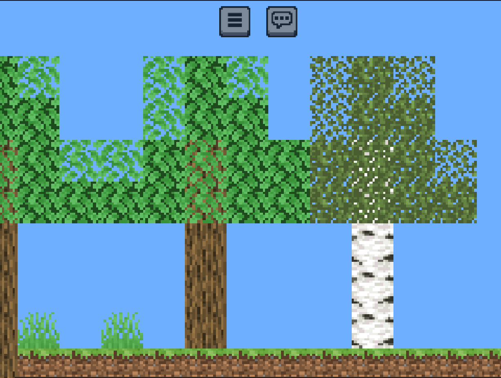

Version 24w31b Changelog
Date: 30-07-2024
This snapshot fixes some bugs from the previous that managed to sneak in, and adds a new tree

Test the latest version Test it!
Additions
- Birch Tree
- FPS counter
- TPS (ticks per second) counter
- Infrastructure to allow for ticking and rendering to be seperated in the future to improve performance
Changes
- Frozen Peaks, Snowy Slopes, Snowy Taiga, Snowy Beach, Snowy Plains, Ice Spikes generate top snow as part of decoration, rather than biome surface
- Added white border around loading screen's bar
- Overlapping dense leaves will now become dense, rather than loggy
- Oak, Spruce , and Birch Spruce trees automatically generate
- Cleaned up old code
- Player can no longer jump to leave crawl mode if there is no space
- If player changes to invalid gamemode and restarts game, gamemode defaults to creative to prevent [MCSE-34]
Bugs Fixed
- [MCSE-31] Performance on mobile is bad
- [MCSE-35] snow biomes have plants on top of snow, not replacing it
- [MCSE-34] create world screen has "cancel" instead of survival-creative toggle
- [MCSE-36] jumping makes steve turn the other way
- [MCSE-38] Parts of debug screen (i) missing
- [MCSE-39] snow is considered a surface block, not a decoration, leading to plants on top of top-snow
- [MCSE-40] Pressing up-arrow while underwater makes player be standing up, rather than continue swimming